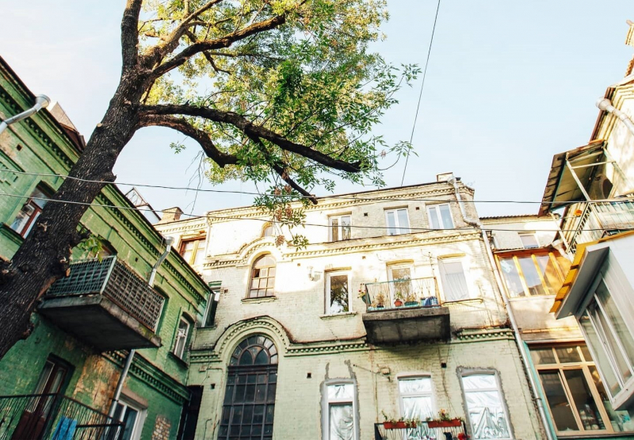
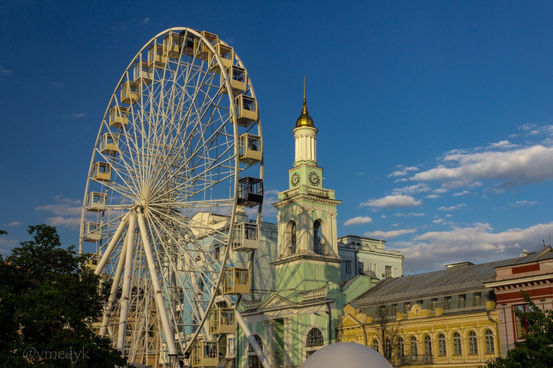

Софійська площа
Про Софію Київську знають навіть ті, хто в Києві жодного разу міг і не бувати. Софія — сакральне місце для українців.
Її вважають однією з найголовніших християнських святинь Східної Європи. Цій пам’ятці архітектури й монументального живопису XI—XVIII століть вдалося вціліти з часів Київської Русі. За переказами, на місці нинішньої пам’ятки України колись розташовувалося поле поблизу міських стін. Саме там у 1036 році Ярослав Мудрий розгромив печенігів. Після цього й було споруджено відомий усім нам Собор святої Софії, а навколишня площа отримала назву Софійської.
Музей народної архітектури й побуту «Пирогово»
Найбільший за площею музей в Україні «Пирогово» до найменших дрібниць відтворює український народний побут в історичному контексті. Це скансен, музей просто неба, музей-село — просторий архітектурно-ландшафтний комплекс, де можна заблукати на декілька днів.
Тут представлено понад 300 пам’яток традиційного українського народного будівництва п’ятьох минулих століть — будинки, криниці, комори тощо. Також у фондах музею зберігається біля 100 тисяч предметів побуту, як-от: одяг, меблі, тканини, знаряддя праці тощо. Де, як не тут, можна відчути шлях українців завдовжки 10 сторіч.
Секретний дворик на Хорива, 18/10
Цей дворик — один із найколоритніших на Подолі: тут сушать білизну на мотузках, а до квартир ведуть дерев’яні сходи.
Тут у різний час розміщувалися: шпалерна майстерня, магазин бляшаних виробів, майстерні з виготовлення чоловічого одягу та ремонту взуття, навіть завод із виробництва штучних мінеральних вод.

Мініскульптури проєкту «Шукай!»
Це історія Києва в бронзових мініскульптурках, яких уже 37 в найнеочікуваніших місцях.
Проєкт створено «менеджеркою Києва» Юлією Бевзенко для того, щоби мешканці та гості міста мали можливість пізнавати історію Києва без гіда, досліджуючи столицю України самостійно. Кожна скульптура містить QR-код, який після сканування відкриває сторінку з детальною інформацією про історію кожної з них.
Кришталева стіна плачу
Мініскульптура пілота з проєкту «Шукай!» у Києві
Стіна завдовжки 40 метрів і заввишки 3 метри складається з українського вугілля антрациту та кристалів кварцу з Бразилії.
Поруч зі стіною є інструкція, де вказані рекомендації щодо того, як взаємодіяти з арт-об’єктом: необхідно встати перед стіною, притулившись головою, серцем і животом до кристалів, сформулювати питання й поміркувати над ним.
«Я передбачаю широку участь громадськості. «Кришталева стіна плачу» — це витвір мистецтва, який може жити тільки тоді, коли до нього звертаються щодня. У моєму уявленні Західна стіна Єрусалима концептуально продовжується до самого Бабиного Яру, перетворюючись на Стіну Плачу і Зцілення», — сказано в описі проєкту, розміщеного від імені художниці.
Старокиївська гора
Оглядовий майданчик біля Десятинної церкви та музею історії України — широко відомий, але від цього він не стає менш гарним і затишним. Це місце просто наповнене історією!
На цьому пагорбі стояв апостол Андрій, передбачивши: тут постане величне і красиве місто Київ.
На Старокиївській горі росте бабуся-липа, що налічує 400 років життя, та унікальна Десятинна церква, від якої до сьогодні зберігся лише фундамент.
Тут є лавочки, де можна посидіти й подумки перенестися в далекі епохи.
Київський велотрек
Київський велотрек — один із найстаріших велотреків континентальної Європи і справжня оаза посеред міста. З 1998 року його визнали пам’яткою історії та архітектури. Якісна реновація велотреку й парк-сквер поруч дали змогу цьому об’єкту стати улюбленим місцем відпочинку киян і гостей міста.
Це гарне місце, щоби зупинитися біля нього під час прогулянки та поспостерігати за тим, як педалюють по колу велосипедисти.
Контрактова площа
Контрактова площа — відкритий простір із дивовижною прив’язаністю до стародавніх традицій і водночас заряджений молодою енергією. Це одна з найстаріших площ, що виникла на Подолі ще за часів Київської Русі. Контрактова — це, насамперед, Києво-Могилянська Академія — чотириста років освітньої традиції в Києві. Контрактовий дім — нині переважно мовчазний, але в його стінах — пам’ять Шевченка й Ліста, Короленка, Бальзака, Паустовського, Вертинського й ще про багато імен, пов’язаних із Київськими контрактами. Фонтан «Самсон» — майже тисячолітня історія місця й народні перекази, збережені в «Кайдашевій сім’ї». Приїжджайте й переконайтесь у цьому на власному досвіді.

Андріївський узвіз
Андріївський узвіз — одна з візитівок міста. Раніше його називали київським Монмартром — сюди приходили художники зі своїми творами на продаж, музиканти та артисти. Тут можна було подивитися та придбати українські сувеніри — вишиванки, писаний посуд, фігурки. Вздовж усієї вулиці розміщувалося багато картинних галерей, художніх салонів. А кожен рік на Андріївському узвозі в День Києва проходив вернісаж народних ремесел, де можна купити картину місцевого художника, сувеніри або ж послухати вуличних музик.